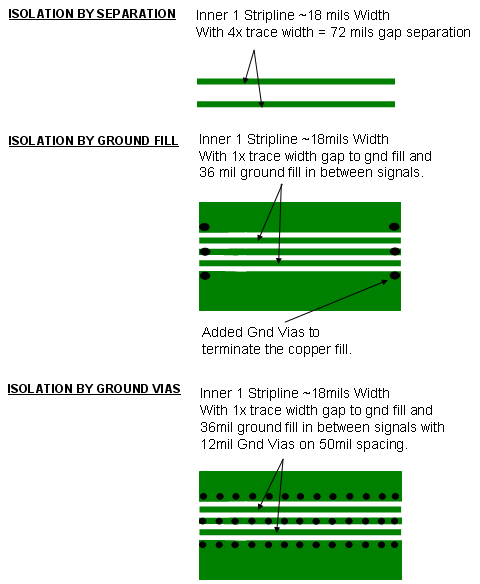
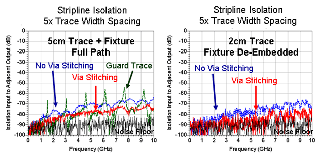
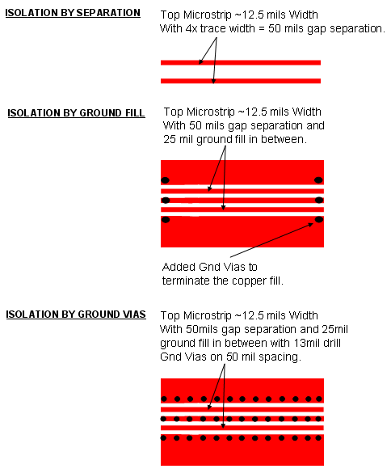
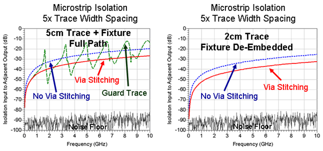

Fencing and shielding
Adjacent paths need isolation and protection from cross-talk. A line of grounding vias placed across the signal layer and its return path layer (ground) creates protective shielding for the RF signal propagation.
For lower frequency considerations see also Shielding and grounding
When placing the fencing ground vias keep in mind:
- The PCB trace routing is the dominant source of crosstalk when using microstrip routing longer then 1 to 2 cm and with smaller spacing than 5x the trace width.
- The spacing between the ground vias determines the isolation performance at higher
frequencies. Between neighboring vias use a maximum via distance of typically 1/10th to 1/15th
of the signal's wavelength in the PCB material.
Example: The wavelength at 6 GHz is approx. 2.54 cm (1 inch) in FR4. When applying 1/15th wavelength spacing, the vias would be 1.7 mm (67 mils) apart.
- Isolation with ground vias at signal transition points is critical for preventing adjacent signal coupling, and for minimizing waveguide modes that can occur with the multi-layer PCB structure.
- Adding ground vias along a signal path can significantly reduce the routing space on internal layers. Therefore they may not be the optimum way to improve isolation. The alternative of simply increasing the separation between traces may provide adequate isolation.
Fencing for striplines and microstrip lines
Adding a ground fill between signal traces generally improves the shielding. However, unwanted resonances can occur if the ground fill has just a limited number of ground via connections.
The ultimate solution in RF shielding is to add a row or rows of grounding vias to fence off the electro-magnetic (EM) fields and increase isolation between the signal traces. Sometimes applying a line of vias is also called "RF stitching".
Here are two practical application examples:
Example for fencing striplines

Results for stripline fencing example

Overall, the RF isolation between the input of the aggressor signal and the output of the adjacent victim signal, or FEXT (Far End Cross-Talk), in this experimental stripline implementation is about 40dB better than that of the very similar microstrip implementation (see microstrip example below).
Also, note that the -70 dB isolation for the stripline routing is already an excellent value and therefore, the addition of ground via stitching to fence off external aggressor EM fields is not needed.
Example for fencing microstrip lines

Results for microstrip fencing example

FEXT (Far End Cross-Talk) for the microstrip is significantly higher than FEXT for the stripline (see stripline example above). This highlights one of the main reasons for the preference of stripline when using a transmission line topology that is not symmetrical and/or has a mixture of dielectric materials.
The experiment using a guard trace with only two ground vias spaced 2 cm apart is particularly bad with isolation as low as -15 dB at one of the resonant peaks near 5 GHz. (Note that with the resonances it is difficult to de-embed the test fixture.) However, it is clear that the resonances are coming from the guard trace and that this topology is not preferred.
When ground via stitching is added, the microstrip isolation data after de-embedding the text fixture does show a measurable improvement of about 8 to 10 dB for the adjacent 2 cm long signal traces. Therefore, it is worth adding some stitches if space is available.
Functional changes
- Introduced in SmarTest 7.1.4